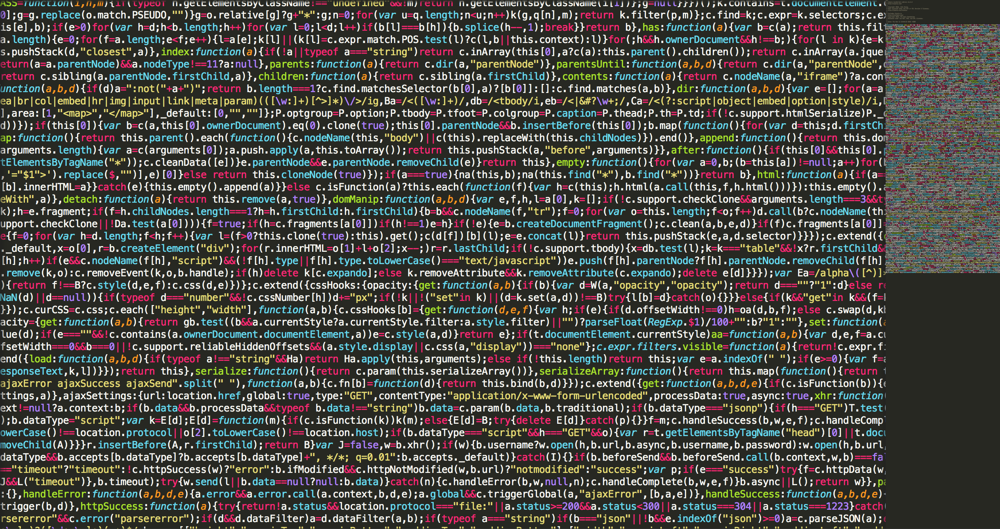

Blog

If you would like to read some of my opinions about technology, economics and life check out my blog. I built the blog from the ground up using Django with a bunch of help from Coding for Entrepreneurs. I try and update it regularly, school and work permitting. The views and opinions expressed on the blog do not reflect the views and opinions of my employers or peers.
Work

I have been doing various bits of programming since I was in High School and have always loved the mystic and challenge it brought. I was brought up doing basic web development using Adobe Dreamweaver CS3 and learning HTML/CSS/JS. I mainly use Python and Javascript nowadays for most of my projects.
Some of my projects are on Github if you would like to check out some of my recent stuff. This past school year I have been working with a dietitian to create a photo log application that uses Machine Learning and Artificial Intelligence to recognize phone pictures automatically to organize and track meals.
About
In my spare time I enjoy playing Euchre with my friends, usually while also enjoying a JackieO's brew. I live in Athens Ohio currently, buy I am originally from Dover Ohio. I enjoy working on side projects like making little games in Python or messing around with Raspberry Pis. I also enjoy playing golf and being outdoors in general. I am a staunch follower of the stock market and love to learn and write about finance and economics. Recently, I have been obsessing over Bitcoin and learning as much as I can about the underlying blockchain technology.
The best and most direct way to reach me is through email. I try and check it regularly throughout the week. Otherwise, I am on all of the main social media platforms.